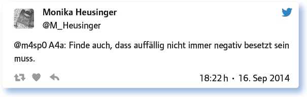

von Elke Höfler
Schüler, die den Unterricht durch ihr Verhalten in einer Weise beeinflussen, die von Lehrenden und auch von Lernenden als störend empfunden wird, gibt es vermutlich in den meisten Klassen.
Wie mit solchen Störungen umgegangen werden kann, ist eine zentrale Frage für Pädagogen, die einerseits an einem guten Lernklima arbeiten, die aber andererseits auch selbst z. T. starken Belastungen durch das Verhalten einzelner Schüler ausgesetzt sind.
Teilweise lassen sich solche Störungen durch angemessenes Classroom Management beheben, andererseits gibt es Verhaltensweisen, die möglicherweise komplexer pädagogisch aufgegriffen werden müssen.
Um diesen Fragehorizont ging es bei diesem #EDchatDE, moderiert von André J. Spang (@tastenspieler) und Torsten Larbig (@herrlarbig).
Du kennst das: Diese Klasse 8a, Montags 8./9.Stunde – ein Albtraum. Wie überstehst du das?
Randstunden in Klassen in „interessantem“ Alter sind immer eine Herausforderung, der man sich auf unterschiedlicher Weise stellen kann. In der Diskussion ergab sich vor allem eine Tendenz hin zur Lernendenzentrierung bzw. -aktivierung, aber nicht ausschließlich:
Mit Humor, Verbindlichkeit und Konsequenz … und einem Kaffee.
Produktive Arbeitseinheiten mit hoher Schüleraktivität funktionieren auch in der 8. Stunde in der 8. Klasse.
Sehr situationsabhängig: Von viel geduldigem Verständnis bis zu „hartem Durchgreifen“.
Wie auch morgens bei lauten Klassen – mit einem „Fahrplan“, den die Schüler kennen, und in dem Belohnungen eingebaut sind.
Klare Regeln und Erwartungen an die SuS richten. Interessen und Wünsche der SuS einbeziehen, wenn möglich, z. B. Sozialform.
Nicht signalisieren, dass man von der Lerngruppe genervt ist. (Kommt nur als Bestätigung an.) Sie ernst nehmen und eine positive Haltung ausstrahlen.
Anton kommt in der ersten Stunde immer etwas später, dann packt er erst mal sein Frühstück aus. Und du?
Schüler für ihr Zuspätkommen vorzuverurteilen ist kein Weg, eine Laissez-Faire-Einstellung jedoch auch nicht. Der genannten Situation kann (und muss) dennoch auf unterschiedlichen Ebenen begegnet werden:
Have a serious, friendly conversation with him after lesson. Ask him why he’s late, why no breakfast at home & no eating in class.
Wenn das schon öfter passiert ist, ist der Zug abgefahren. Beim ersten Mal eine klare Ansage auf der persönlichen Ebene.
Ihm guten Appetit wünschen.
Bei mir gibt es am Anfang jeder Stunde für alle SuS die Möglichkeit, zu essen und zu trinken.
Es gibt classroomrules die ich mit den Lernenden zusammen entwickle. Und die werden eingehalten. Keine Diskussion. Nach der Stunde spreche ich allerdings mit ihm über die Sache: Das ist wichtig. #standpunkte #regeln #gründe
„Verhaltensauffälligkeiten“ sind eine Frage der Perspektive? Wer definiert, warum, was auffällig ist?
Diese Frage ging vor allem in die Richtung Normsetzung und Definition. Die Teilgeber versuchten, Auffälligkeit zu definieren und auch Wahrnehmungen damit zu verbinden.
Aus den Beobachtungen eines auffälligen Verhaltens lassen sich auch Schlüsse ziehen, die aber nicht in einer Vorverurteilung enden sollten:
Antworte auf 3 Tweets unterschiedlicher Teilgeberinnen a) zustimmend, b) kritisch, c) provozierend!
Es wurde noch einmal betont, dass das Auffallen nicht zwangsläufig negativ besetzt sein muss und dass es auch situationsabhängig zu sehen ist:


Darüber hinaus wurden Unterrichtsstörungen als subjektive Wahrnehmung diskutiert:
Wie können digitale Medien dabei helfen, mit großen und sehr inhomogenen Lerngruppen besser klar zu kommen?
Digitale Medien sind aus dem Alltag der Schüler nicht mehr wegzudenken. Wie sie eingesetzt werden können, um mit schwierigen oder anspruchsvollen Lehr- und Lernsituationen fertigzuwerden, zeigen die folgenden Aussagen:
Digitale Lehrräume (arbeiten, wann und wo die Schüler wollen, Hauptsache, der Wochenplan stimmt), neue Lehrmittel (YT, Spiele).
Genau das frage ich mich auch seit einem halben Jahr und habe noch keine wirkliche Ahnung.
Mobile Endgeräte ermöglichen dezentrale Aktivitäten, hohe Schüleraktivierung, Motivation.
Finde MOOC super, da kann jeder nach seiner Geschwindigkeit arbeiten, wann er will. Warum braucht man da noch Schulen?
Digital Media are not a solution. For nothing. They are tools.
Still sitzen, alle arbeiten das gleiche Pensum im gleichen Tempo. Das kann doch nicht ernst gemeint sein, oder?
Immer wieder wird von Binnendifferenzierung und einer Fokussierung auf die Lernenden gesprochen. Doch wird sie auch gelebt? Wie kann Abwechslung in den Unterricht gebracht werden?
Um das in jedem Fach zu leisten, muss man verhaltenskreativ werden.
Bei Lernstandserhebungen und Vergleichsarbeiten schon. Ansonsten zu homogeneren Klein-Gruppen zusammenfassen. Wochenpläne einführen.
Sollte ja auch nicht so sein: Binnendifferenzierung, Lerntempoduett. Frage ist nur, geht das in einer 5er-Klasse mit 32 Schülern?
Es hat etwas mit Menschenwürde zu tun, nicht über allen Schülern die gleiche Einheitssoße auszukippen
„Still sitzen“ darf ruhig ein Element von mehreren bei Verhalten in und außerhalb des Klassenraums bleiben.
Welche Anregungen, Fragen hast du sonst noch zum Thema?
Fazit:
Es gibt ganz unterschiedliche Wege, mit verhaltenskreativen Schülern umzugehen. Ebenso unterschiedlich, da subjektiv, ist das Empfinden, was unter „Verhaltenskreativität“ verstanden wird. Allgemeingültige und „sichere“ Wege im Umgang mit Unterrichtsstörungen gibt es nicht, doch zeigt diese Ausgabe des #EDchatDE Möglichkeiten und individuelle Wege aus der Praxis auf, die sich bewährt haben. Als Fazit lässt sich vielleicht ziehen, dass man lernen muss, mit Störungen und Abweichungen umzugehen. Es hilft, Regeln zu definieren, diese einzufordern, aber sich auch selbst an sie zu halten.
Weiterführende Informationen:
Blogpost zur Ausgabe 49 des #EDchatDE: https://edchatde.wordpress.com/2014/09/15/zur-vorbereitung-des-49-edchatde-umgang-mit-verhaltenskreativen-schulerinnen-u-schulern/
Blogpost zur Ausgabe 61 des #EDchatDE: „Classroom-Management: cooperation with students during lessons (rules, methods, homework etc.) https://edchatde.wordpress.com/2014/12/08/zur-vorbereitung-des-61-edchatde-classroom-management-cooperation-with-students-during-lessons-rules-methods-homework-etc/
Protokoll zur 61. Ausgabe des #EDchatDE: https://docs.google.com/spreadsheets/d/1GzC09ca4V9F02uLNyWsLNIxaibbd1bzV5n6z0Z3kdJE/pubhtml
Protokoll zur Ausgabe 134 des #EDchatDE: Classroommanagement (Summer-Special): https://docs.google.com/spreadsheets/d/1m2nMNdzXbklTFkt0uwjBccKpeQ6vWpK1arXIsAKuKfk/pubhtml
Link zum vollständigen Protokoll: